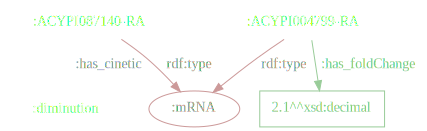
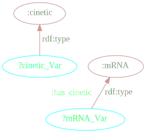
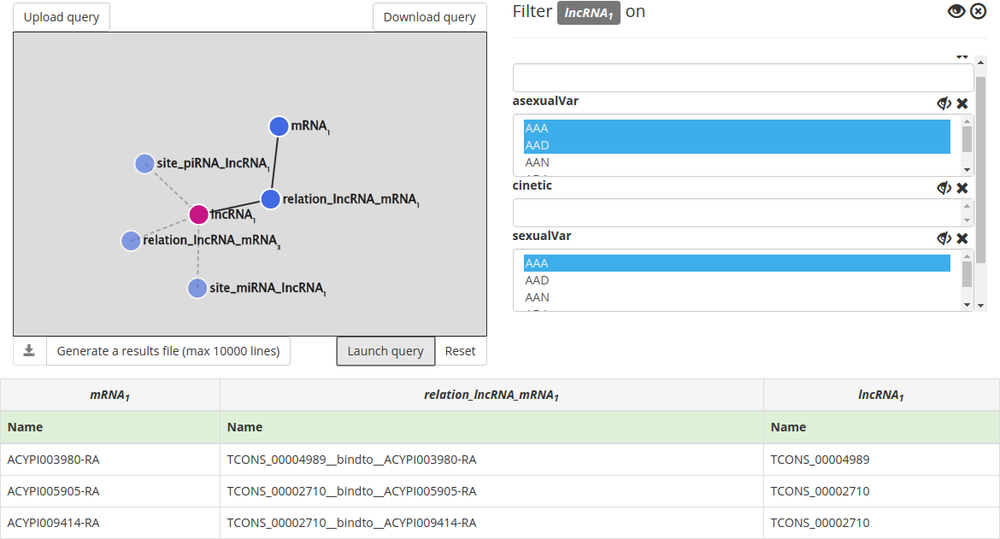
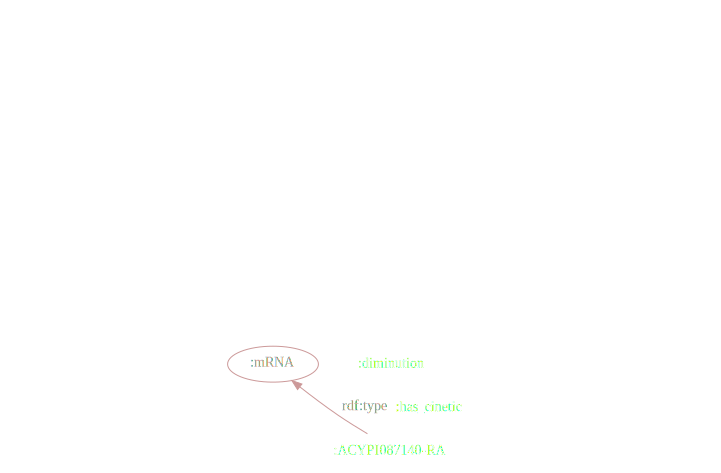
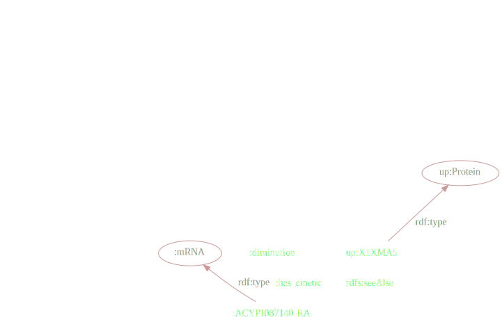
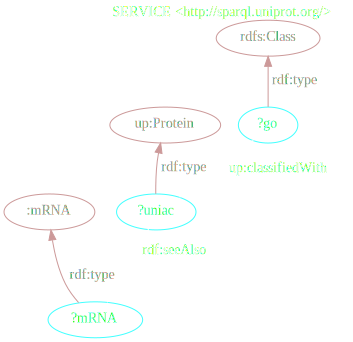
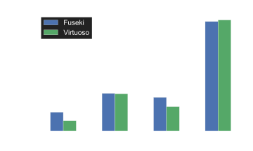

Création et analyse d'un réseau de régulation génique en RDF
Application au puceron
Maël Kerbiriou
Tuteurs : Denis Tagu (INRA) et Frabrice Legeai (INRIA)


Réseau de régulation du puceron
Technologies du Web Sémantique
RDF : Interprétation en graphe
RDF
Syntaxe Turtle
@prefix xsd: <http://www.w3.org/2001/XMLSchema#> .
@prefix rdf: <http://www.w3.org/1999/02/22-rdf-syntax-ns#> .
@prefix rdfs: <http://www.w3.org/2000/01/rdf-schema#> .
@prefix : <http://www.semanticweb.org/irisa/ontologies/2016/1/igepp-ontology#> .
:ACYPI087140-RA rdf:type :mRNA ; # la ligne suivante porte sur le même sujet :
rdfs:label "ACYPI087140-RA" ;
:has_cinetic :diminution .
# La ligne suivante aborde un nouveau sujet :
:ACYPI004799-RA rdf:type :mRNA ;
rdfs:label "ACYPI004799-RA" ;
:has_foldChange "2.1"^^xsd:decimal.
SPARQL
Language de requête
pour l'extraction de sous-graphes par motifs :

SPARQL
Syntaxe inspirée du SQL
PREFIX : <http://www.semanticweb.org/irisa/ontologies/2016/1/igepp-ontology#> .
PREFIX rdf: <http://www.w3.org/1999/02/22-rdf-syntax-ns#> .
SELECT ?mRNA_Var ?cinetic_Var
WHERE {
?mRNA_Var rdf:type :mRNA ;
:has_cinetic ?cinetic_Var .
?cinetic_Var rdf:type :cinetic .
}
AskOmics
Motivations
nani gigantum humeris insidentes
Motivations
Intégrer des ressources externes
SPARQL
Fédération
SPARQL
Fédération
Permet de mélanger des motifs sur des graphes locaux et distants de manière transparente
PREFIX rdf: <http://www.w3.org/1999/02/22-rdf-syntax-ns#>
PREFIX owl: <http://www.w3.org/2002/07/owl#>
PREFIX up: <http://purl.uniprot.org/core/>
PREFIX : <http://www.semanticweb.org/irisa/ontologies/2016/1/igepp-ontology#>
SELECT ?mRNA ?uniac
WHERE {
GRAPH <urn:sparql:tests-askomics> {
?mRNA :has_UniProtAC ?uniac .
}
# Requête executée sur l'endpoint UniProt
SERVICE <http://sparql.uniprot.org/> {
?uniac up:classifiedWith ?go .
?go rdf:type owl:Class .
}
}
SPARQL
Fédération
Deux possibilités pour accéder aux ressources externes :
- Interroger les ressources via la fédération sur demande
- Copier les données dans un graphe local pour ensuite les interroger
→ Évaluation des performances
Objectifs
Développer dans AskOmics les fonctionalités pour
- Intégrer des ressources externes
- Cas d'étude : Rapatriement des termes GO pour les mRNA à partir d'UniProt
- Benchmarks : Fédération à la demande vs. copie dans une graphe local
- Spécifications
- Interroger avec la Gene Ontology (GO)
- Interroger les termes GO des entités
- Sélectioner les entités par des termes GO
- Benchmarks pour la transitivité
Benchmarks : Fédération
Intérogation et Sélection GO sur un graphe local vs. fédération à la demande
Gain d'un facteur 1000x avec une copie locale !